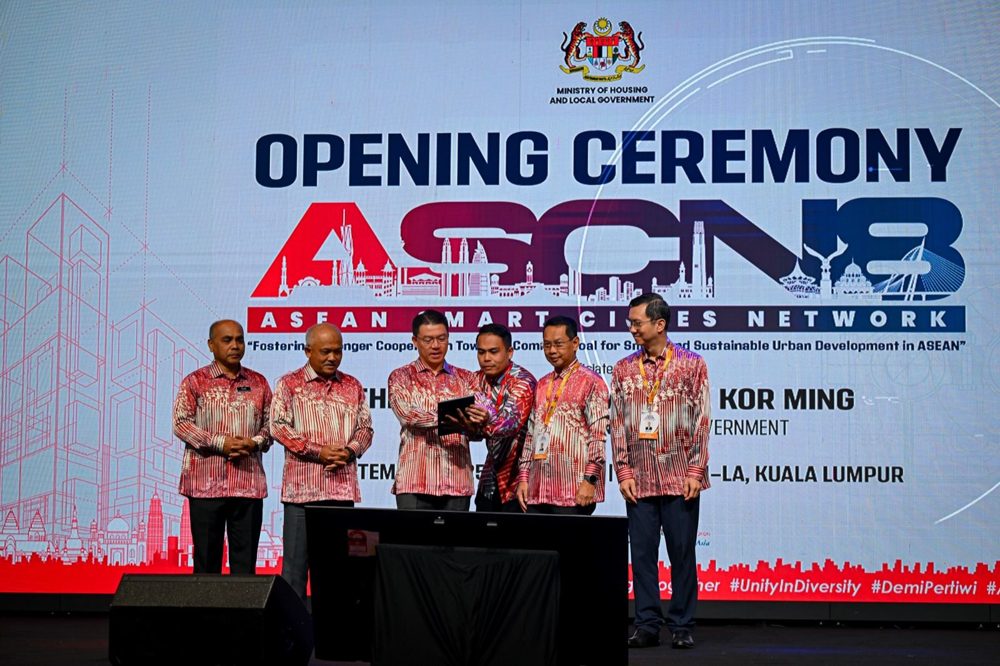

Member cities
0Live Monitor
Loading trusted-source ASCN signals...
ASEAN Public Platform
A living network of 38 cities learning from each other in public.
ASCN was launched in 2018 to build citizen-centric, data-aware urban cooperation. This page turns the network into a readable operating layer: history, progress, city intelligence, and trusted research.
- Founded: 28 April 2018 at the 32nd ASEAN Summit (Singapore).
- Framework adopted: 13 November 2018 at the 33rd ASEAN Summit.
- Current scale: 38 member cities (January 2026 roster).

Tracked projects (2025)
0ASPP short-term participants
0ASPP master’s participants
0What This Network Is
Incentives over instructions. Data with empathy. Regional trust made visible.
ASEAN Smart Cities Network (ASCN) was established on 28 April 2018 and anchored by the ASEAN Smart Cities Framework adopted on 13 November 2018. It started with 26 pilot cities and has expanded to 38 cities by January 2026.
The objective is practical: city-to-city learning, bankable project pipelines, and better service delivery for citizens. This is not a brochure. It is a regional operating platform and a shared urban learning environment.
This interface is designed as an information-dense landing experience: clear hierarchy, meaningful comparisons, source transparency, and policy context from ASEAN, national governments, and trusted media.
Network Timeline
From pilot cohort to regional platform.
-
ASCN established at the 32nd ASEAN Summit in Singapore.
The network starts with 26 pilot cities and a practical action-plan mindset.
-
ASEAN Smart Cities Framework adopted at the 33rd ASEAN Summit.
Method and shared language for implementation become formalized.
-
Thailand chair year builds operating momentum.
Coordination and visibility improve through implementation-focused chairship activities.
-
Planning Guidebook era.
Guidebook introduces a clearer planning process, priority areas, and enabling conditions.
-
Malaysia hosts ASCN 8 and Smart City Expert Talk.
Action Plan 2026-2035 and ASUF-linked support push the network into a larger execution cycle.
-
Philippines takes chairship, network reaches 38 cities.
Public-facing transparency becomes critical as policy, partnerships, and city portfolios scale.
Public Dashboard
What the 2025 report says when the data is allowed to speak.
The dashboard starts with baseline metrics, then compares focus areas, membership waves, and project intensity by cohort.
Total public projects
0 Monitoring & Evaluation Report 2025Ongoing
0 81% in implementationCompleted
0 13% concludedPlanning
0 6% in proposal or feasibilityFocus Areas
Six lenses, one regional operating system.
Membership Waves
How the city cohort expanded over time.
Comparative Motion
Project load by cohort year.
This view compares city count, total tracked projects, and per-city average by joining wave.
City Compare Lab
Choose up to three cities and compare movement over time.
City Intelligence
Southeast Asia city map with interactive callouts.
Regional Locator
Click a city card, see where it sits on the map.
Selected City
Choose a city from the map callouts.
Mentions & Trends
Trusted-source coverage and why ASCN gets cited.
Real-time ASCN feed health
Waiting for first sync...
Pulling ASEAN and trusted media streams. If a source fails, fallback data remains visible.
Source status
Latest alerts
Search-intent monitor watchlist
Live widgets are loaded from Google Trends when available. If blocked by rate limits, use the direct links below for the same queries.
ASEAN Smart City
Southeast Asia Smart City
ASEAN Smart Cities Network
People, Roles, and Source Stack
Leadership layer, working teams, and core reference documents.
Chairship Tracker
Malaysia 2025 → Philippines 2026
- ASCN 8 Annual Meeting (Malaysia)
- Smart City Expert Talk (Malaysia)
- Philippines announced as 2026 chairship
- Roster reaches 38 cities (with Dili)
- 2026 chairship cycle review milestone
Malaysia 2025
ASCN 8 and policy acceleration
Under Malaysia’s chair year, ASCN held the 8th Annual Meeting on 9 September 2025 and a Smart City Expert Talk on 10 September 2025, aligning investment and implementation priorities.
Philippines 2026
Next chairship cycle
The 2026 cycle is framed around Philippine hosting and execution quality. Yes, the internal joke stays: “chairship” has become part of the network’s own vocabulary.
Operating principle
Citizen-centric, data-disciplined
ASCN performs best when city teams compare what works, share implementation tools, and convert policy intent into measurable citizen outcomes.
Experimental Project Note
Research and interface direction by Dr. Non
This landing page is presented as an experimental public intelligence project by Dr. Non Arkaraprasertkul, Chief Expert in Smart Promotion at DEPA, combining policy storytelling, data usability, and regional collaboration design.
“Policy pages should feel alive enough to be used, not archived.”Open ASEAN CSCO Reference Page
Research Backbone
DEPA and ASCN source materials in this workspace

Contact and Governance
Direct channel to the ASEAN Connectivity Division, plus privacy and usage statements.
ASEAN Secretariat
ASEAN Connectivity Division
The ASEAN Secretariat
Tel. No. +6221 7262991 ext. 1511
Fax No. +62217398234
benazir.syahril@asean.org
ASEAN Secretariat | 70 A Jalan Sisingamangaraja | Jakarta 12110 Indonesia
www.asean.org |
x.com/asean |
facebook.com/aseansecretariat
Quick Message
Send a short inquiry
Privacy & Legal
Professional handling statement
- Personal data is handled under applicable privacy regimes, including GDPR and PDPA principles for data minimization, purpose limitation, and secure processing.
- This page contains public information references. Confidential submissions should only be shared through authorized ASEAN Secretariat channels.
- This email is confidential. Any usage of content or attachments by a non-intended recipient is unlawful.
- © ASEAN Secretariat and contributing agencies. All rights reserved.